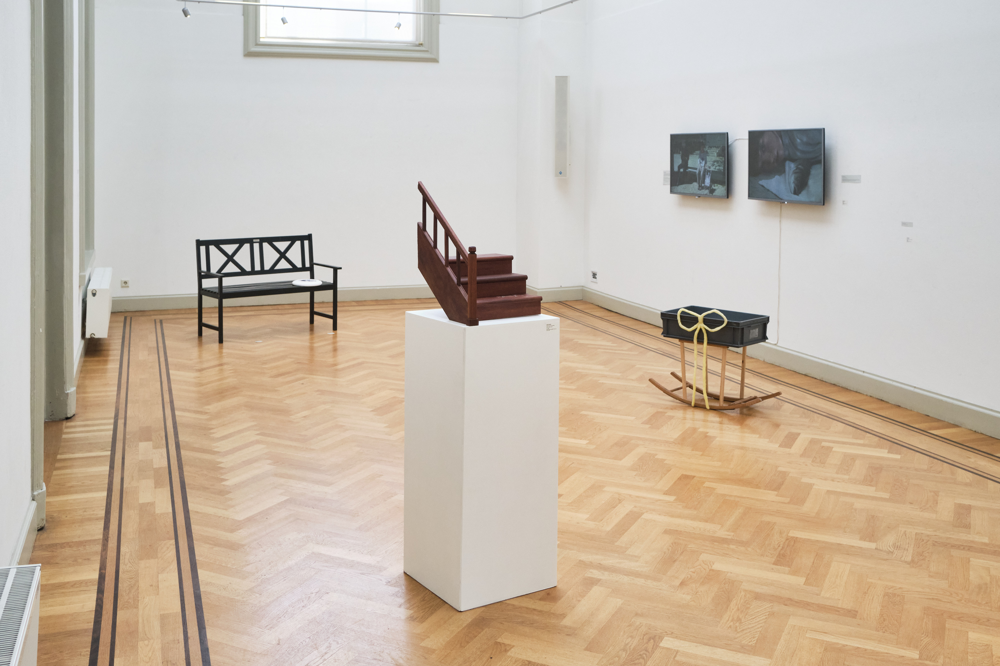
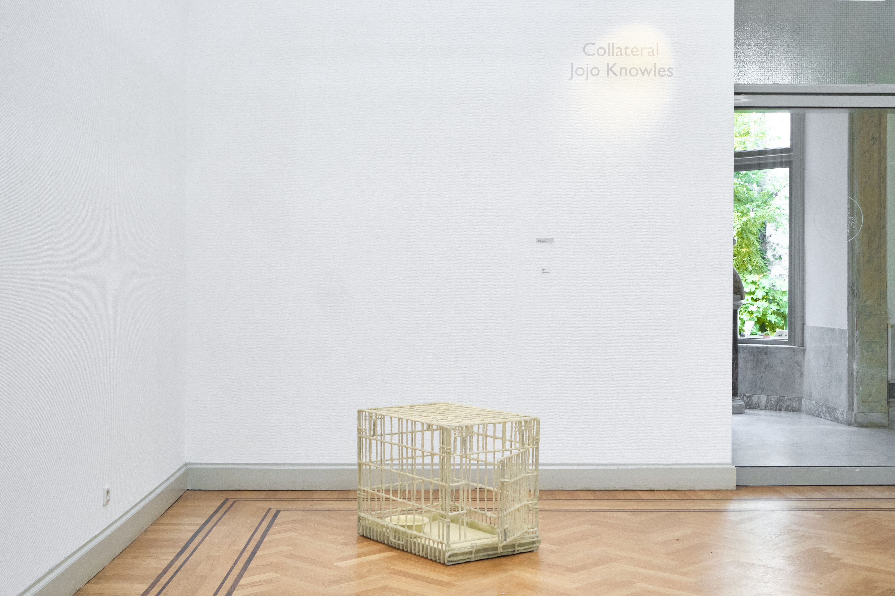
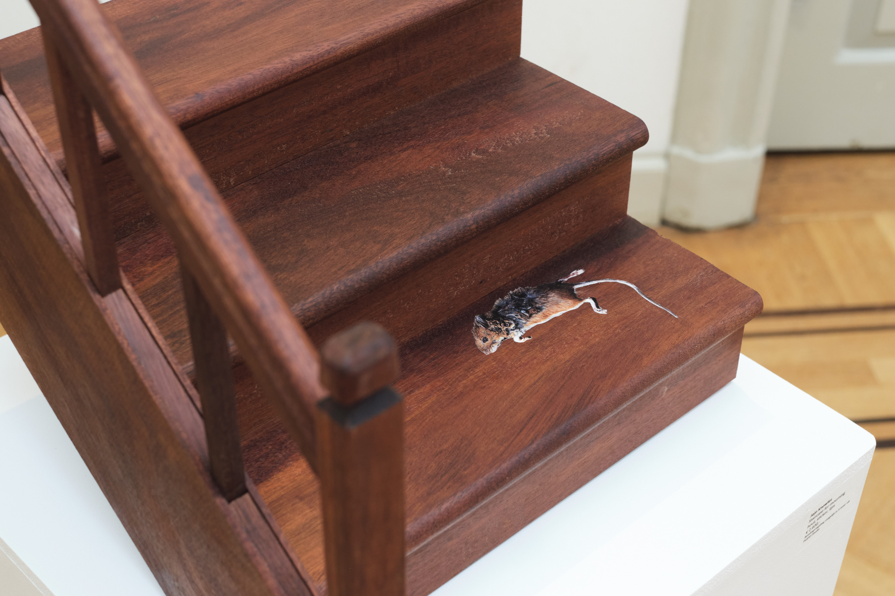
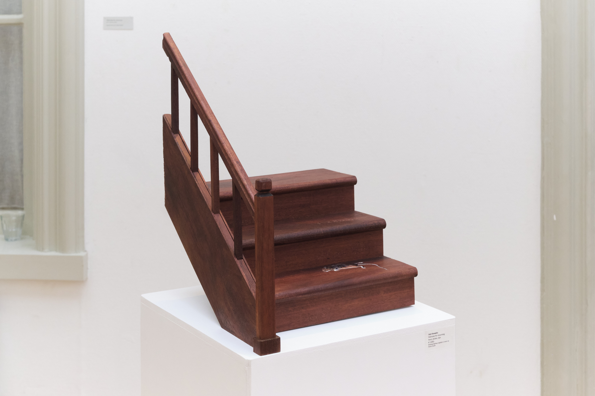
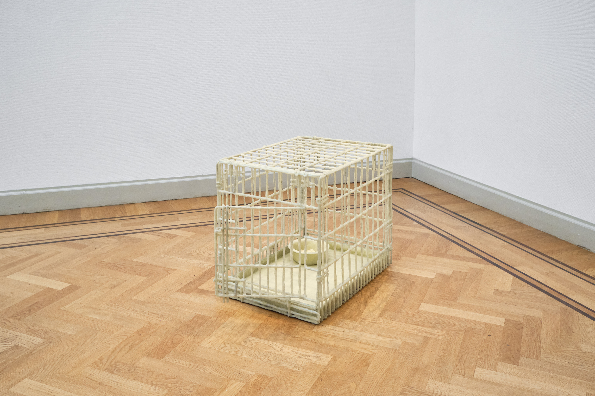
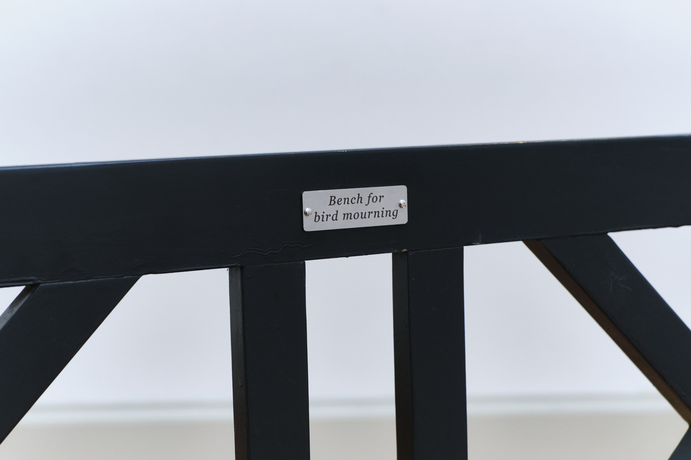
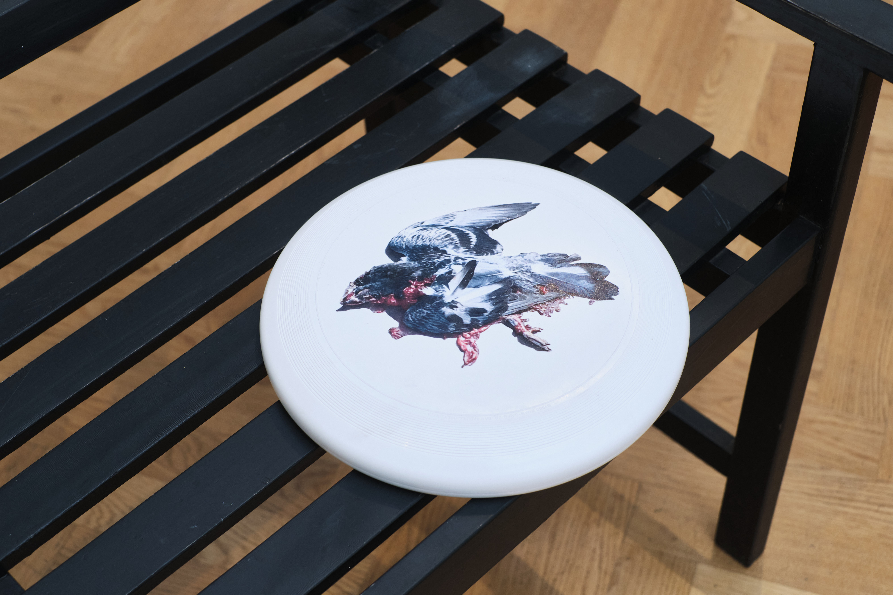

Collateral, 2025
august-september, Pulchri Studio, The Hague.
Collateral is a solo exhibition of sculpture and video investigating the absurd corners of human centrism. The works reflect on the ways animals suffer as collateral damage to daily human lives. The small sufferings, the ones that are easy to overlook. The artist spends the day with a dead fish, eats raw onions to be more like an ape, memorializes roadkill. Searching for ways to mend our relationships with animals we domesticated, and searching for a way to de-domesticate ourselves.
The exhibition included the performance "Grooming I" performed at two moments during the exhibition.
Photographed by Hannah Schleifer.






